Checking different response distributions
Source:vignettes/articles/response-distributions.Rmd
response-distributions.RmdModel diagnostics explains PIT residuals, reference bands and dependence. Here we consider measurements whose variance, zero probability, category or detection limit changes what a residual means. The examples use mgcv and gratia; the motorcycle dataset needs the optional MASS package, and the comparison of fitting packages needs the optional GJRM package. Each simulation describes its measurement protocol and response distribution.
Does variability change during a process?
The MASS::mcycle data record acceleration at times after
impact in simulated motorcycle accidents. The mean acceleration changes
rapidly after impact, and its spread also appears to vary. A
constant-variance Gaussian model can represent the mean while failing to
capture that spread.
The fits assume independent measurement errors. The available columns, time and acceleration, provide no accident identifiers for estimating correlation between measurements from the same accident.
data("mcycle", package = "MASS")
ggplot(mcycle, aes(times, accel)) + geom_point() +
labs(x = "Time after impact (ms)", y = "Acceleration (g)")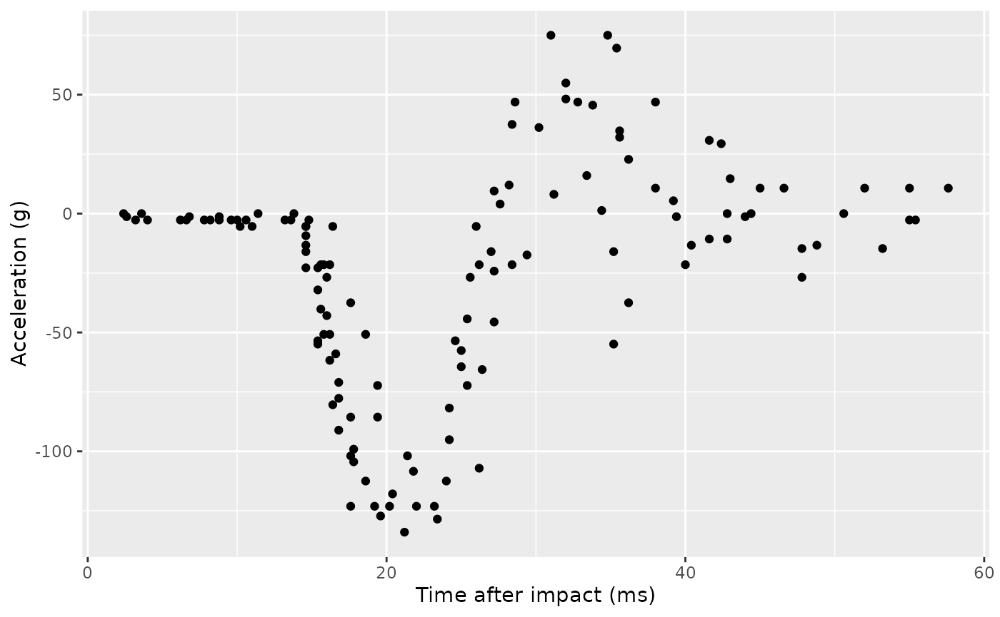
varying <- gam(list(accel ~ s(times, k = 20), ~ s(times, k = 6)),
data = mcycle, family = gaulss(), method = "REML")
draw(varying)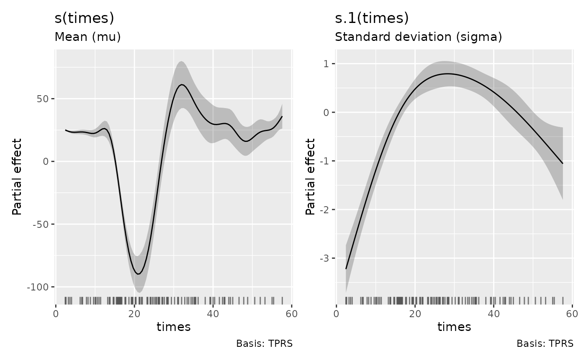
appraise(constant, type = "quantile", seed = 401)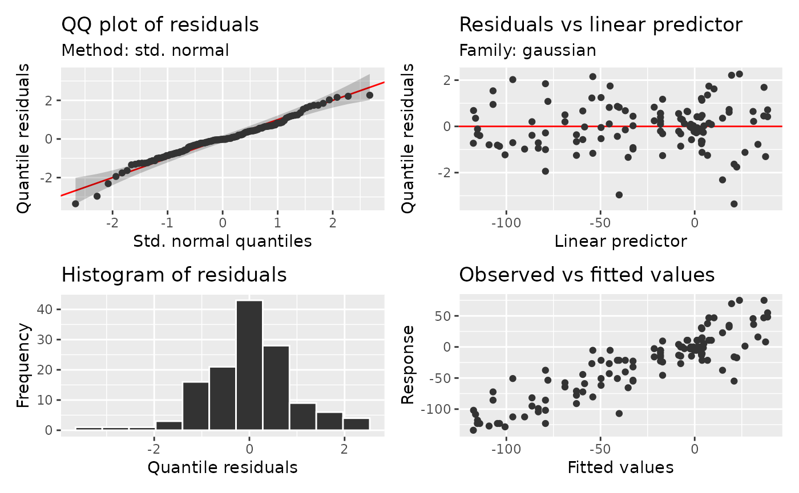
appraise(varying, type = "quantile", seed = 401)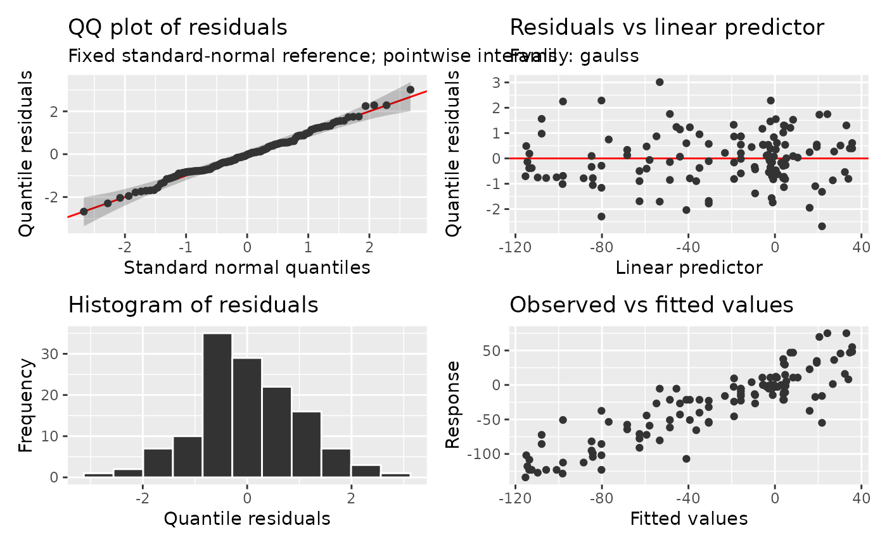
The first smooth describes mean acceleration; the second describes the scale predictor. Their subtitles identify the distributional parameter. The family represents scale internally by inverse standard deviation, so interpret that curve through the family link rather than assuming it is a curve of residual variance. We extract the inverse link for the scale parameter to do this:
impact_grid <- data.frame(times = seq(min(mcycle$times), max(mcycle$times),
length.out = 100))
eta <- predict(varying, newdata = impact_grid, type = "link")
mean_acceleration <- inv_link(varying, parameter = "location")(eta[, 1])
precision <- inv_link(varying, parameter = "scale")(eta[, 2])
ggplot(data.frame(impact_grid, sd = 1 / precision), aes(times, sd)) +
geom_line() + labs(x = "Time after impact (ms)", y = "Fitted standard deviation (g)")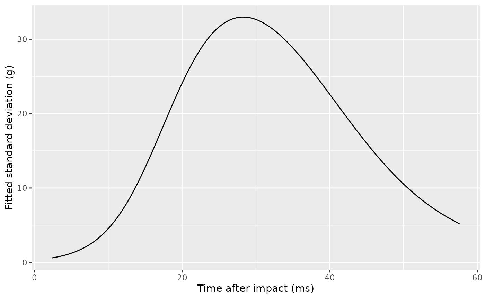
The spread increases around the period of rapid change. Modelling it reduces a systematic residual pattern and describes how both mean acceleration and its spread change with time after impact.
Estimate means and variability
fitted_moments() converts the model’s distribution
parameters into response moments and propagates their joint uncertainty.
It can evaluate the fitting observations or supplied prediction
rows:
head(fitted_moments(varying, data = impact_grid,
moments = c("mean", "variance", "sd")))
#> # A tibble: 6 × 8
#> .row .parameter .fitted .se .lower_ci .upper_ci .status times
#> <int> <chr> <dbl> <dbl> <dbl> <dbl> <chr> <dbl>
#> 1 1 mean -0.506 0.465 -1.42 0.405 ok 2.4
#> 2 1 variance 0.364 0.179 0.139 0.954 ok 2.4
#> 3 1 sd 0.603 0.148 0.373 0.977 ok 2.4
#> 4 2 mean -1.24 0.332 -1.89 -0.586 ok 2.96
#> 5 2 variance 0.494 0.230 0.199 1.23 ok 2.96
#> 6 2 sd 0.703 0.163 0.446 1.11 ok 2.96Each .parameter identifies a requested quantity. For
variance rows, .fitted contains the estimated response
variance, and .se describes uncertainty in that estimate.
Standard errors and interval bounds are on the quantity’s own scale. By
default the delta method differentiates the moment formulas and combines
those derivatives with the full parameter covariance.
conditional_moments() builds the same covariate grid as
conditional_values(). Other covariates are held at their
typical values. Choose posterior simulation to evaluate the moments at
joint parameter draws, then summarise those values:
conditional_moments(varying, condition = "times", moments = c("mean", "sd"),
uncertainty = "simulation", n_draws = 1000, seed = 419) |>
draw()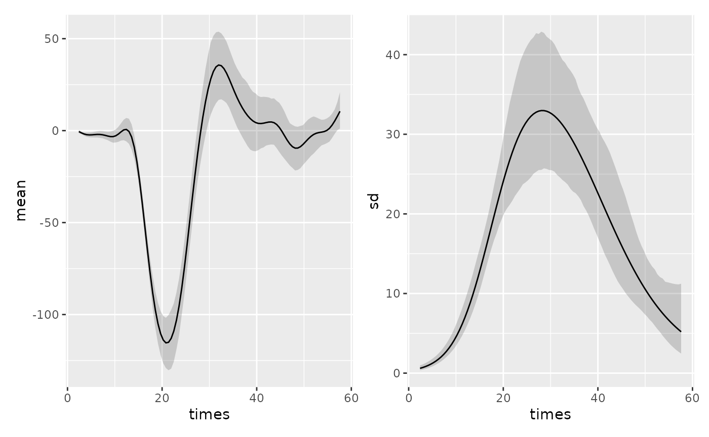
The available quantities are mean, variance, SD, coefficient of
variation ("cv"), skewness, kurtosis and excess kurtosis;
moments = "all" requests all seven. CV requires a positive
mean, so it is inappropriate where predicted acceleration is negative.
Kurtosis is the fourth central moment divided by squared variance;
excess kurtosis subtracts three.
For a Gamma response with mean mu and dispersion
phi, variance is phi * mu^2, CV is
sqrt(phi), skewness is 2 * sqrt(phi), and
excess kurtosis is 6 * phi. Gamma() estimates
a global dispersion, whereas gammals() can let it vary with
covariates. The default nuisance = "estimated" includes
uncertainty in estimated global parameters using the fitting criterion’s
second derivatives and the change in fitted coefficients as those
parameters vary. Unsupported fitting configurations give an error;
nuisance = "fixed" explicitly conditions on their fitted
values. Parameters represented by coefficients, including scale and
shape predictors, retain their joint uncertainty.
For ML/REML fits, the moments use the likelihood dispersion in
reml.scale, and rescale the conditional coefficient
covariance to that same dispersion. This can differ from the
Pearson/Fletcher estimate in sig2. The saved curvature
describes the likelihood estimate, so it must be paired with that
estimate when propagating uncertainty. Smoothing uncertainty uses
curvature and coefficient sensitivities at the fitted parameters,
including the mapping for linked or fixed smoothing parameters.
Moments must exist at the fitted parameters and at the draws used for
an interval. For example, GEV skewness requires shape below one third
and kurtosis requires shape below one quarter. Undefined results are
retained with a .status. Simulation also reports
.p_defined; it withholds intervals if any draw is undefined
instead of silently dropping those draws. See
fitted_moments() for family coverage, categorical scoring,
grouped models, and the distinction between latent and censored
observations.
posterior_predictive_plot(varying, n = 50, seed = 402)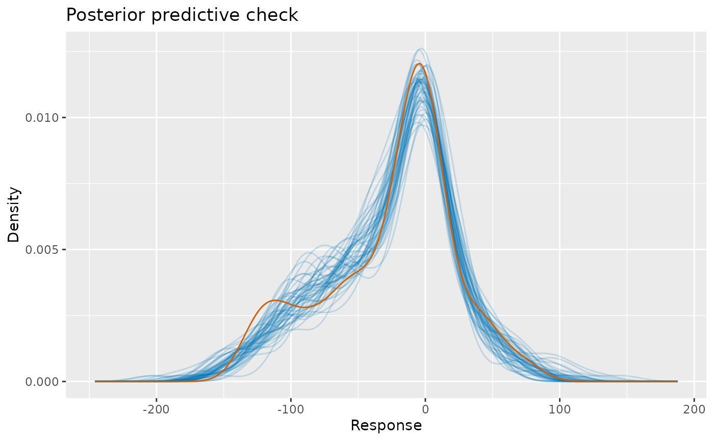
All mean and scale coefficients are drawn together for this check, retaining their covariance. Parameters outside the coefficient vector remain fitted. A kernel density overlay compares the full response distribution; it can conceal local failures, so retain the predictor plots too.
The same question with GJRM
GJRM::gamlss() also fits univariate distributional
regression. This Gaussian fit asks the same mean-and-spread question
with a different fitting procedure. It need not return identical
smoothing estimates to mgcv.
library("GJRM")
impact_gjrm <- GJRM::gamlss(list(accel ~ s(times, k = 20), ~ s(times, k = 6)),
data = mcycle, family = "N")
gratia::draw(impact_gjrm)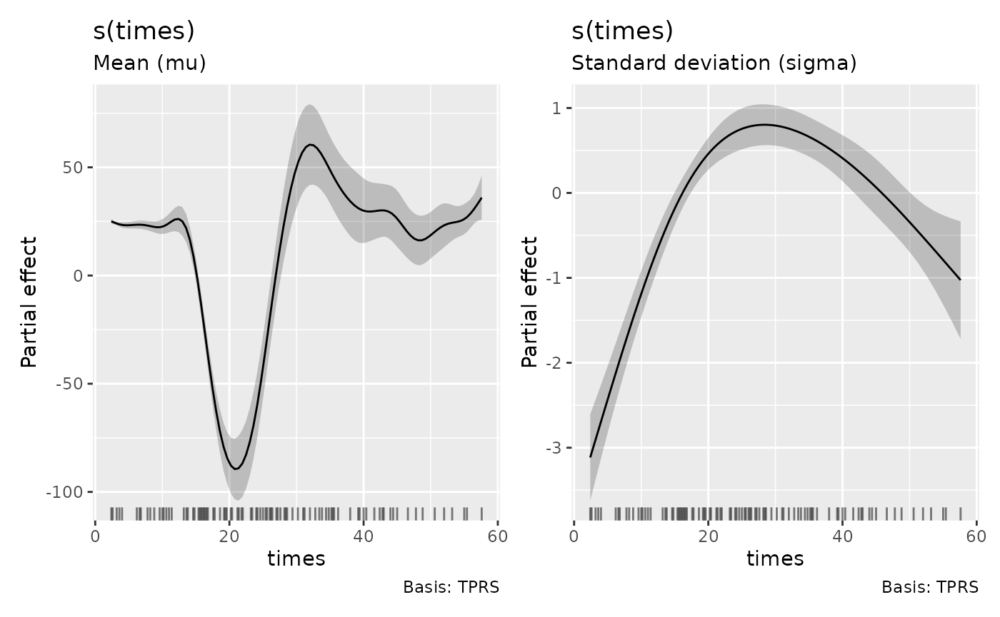
appraise(impact_gjrm, seed = 403)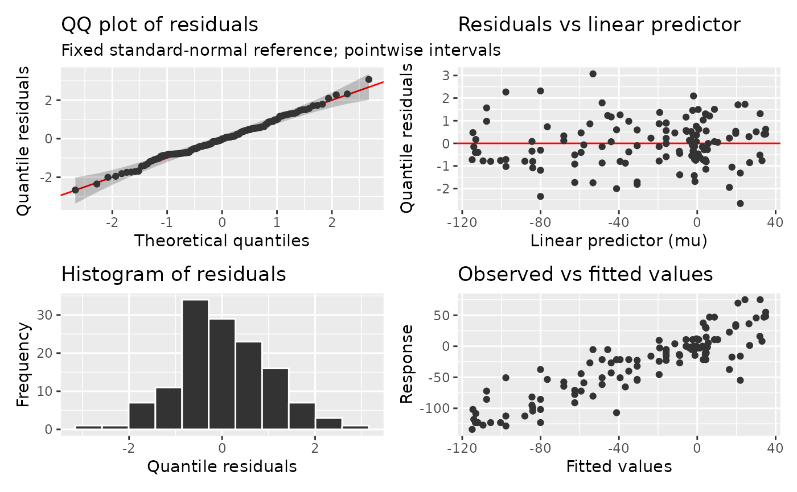
posterior_predictive_plot(impact_gjrm, n = 50, seed = 404)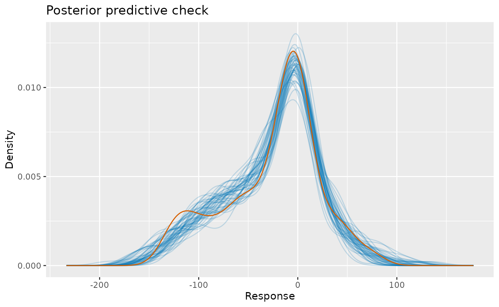
Gratia uses final fitted distribution parameters for the response mean and randomised quantile residuals, with a standard-normal reference. Smooths identify their parameter in subtitles. Agreement between diagnostic patterns across fits helps distinguish a modelling issue from one fitting procedure’s choice of smoothness.
Supported uncensored univariate GJRM distributions are N, LN, GA,
GAi, P, NBI and NBII. Other joint, survival and censored models remain
unsupported. GAi parameterisation is supported by the diagnostic adapter
where an appropriate fit is available; some GJRM versions do not accept
GAi in gamlss(). NB family names differ across packages:
GJRM NBII has size equal to fitted mean divided by its dispersion
parameter. Gratia uses that likelihood definition, rather than a stored
Poisson CDF present in some upstream versions.
Positive observations and precision weights
Suppose a chemical concentration is measured in samples with
different amounts of replication. Averaging more independent
measurements can reduce variance without changing the mean. We simulate
positive concentrations whose squared coefficient of variation is
0.4 / precision. A Gamma log-link model describes this
protocol. The precision weights are part of the response distribution,
not merely plotting weights.
set.seed(405)
chemical <- data.frame(flow = runif(400, 0, 10),
precision = rep(c(1, 2, 4, 8), length.out = 400))
mu <- exp(1 + 0.5 * sin(chemical$flow / 3))
chemical$concentration <- rgamma(400, shape = chemical$precision / 0.4,
scale = mu * 0.4 / chemical$precision)
gamma_fit <- gam(concentration ~ s(flow, k = 10), data = chemical,
weights = precision, family = Gamma(link = "log"), method = "REML")
appraise(gamma_fit, type = "quantile", seed = 406)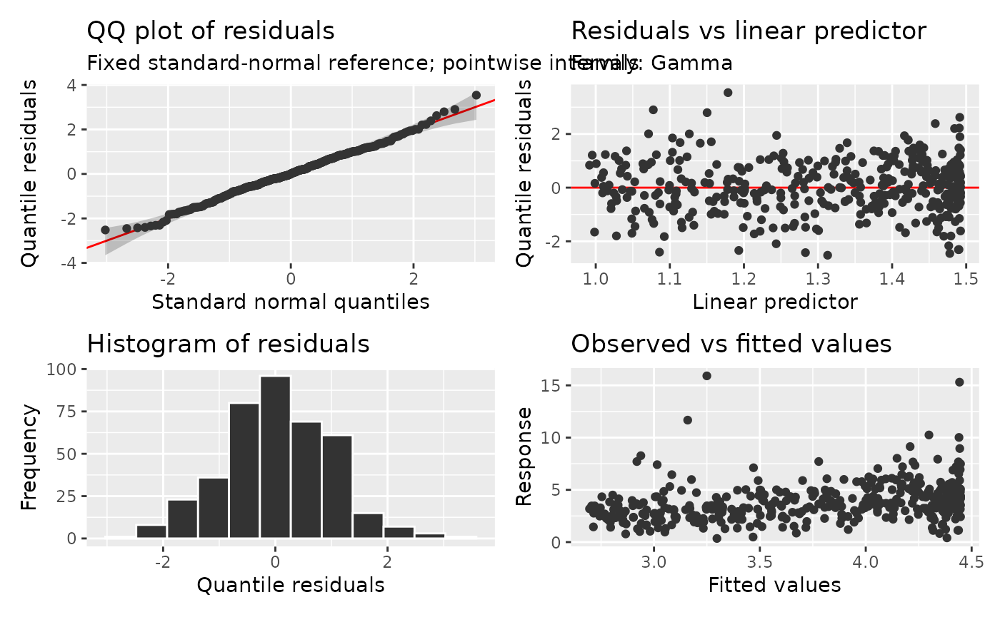
The diagnostics compare each observation with its own precision. Response simulation also respects those fitted weights. The expected variance is \phi\mu_i^2/w_i, where w_i is precision and \phi is estimated dispersion. A larger weight narrows the response distribution. Explicit sampling weights in gratia replace these defaults; they should represent a different measurement protocol, not a cosmetic adjustment.
An inverse Gaussian alternative uses variance \phi\mu_i^3/w_i. It therefore allows variability to increase more rapidly with the mean. Fit it when that relationship is plausible and examine the tails, rather than selecting it because both families have positive support.
ig_fit <- gam(concentration ~ s(flow, k = 10), data = chemical,
weights = precision, family = inverse.gaussian(link = "log"), method = "REML")
qq_plot(ig_fit, type = "quantile", seed = 406)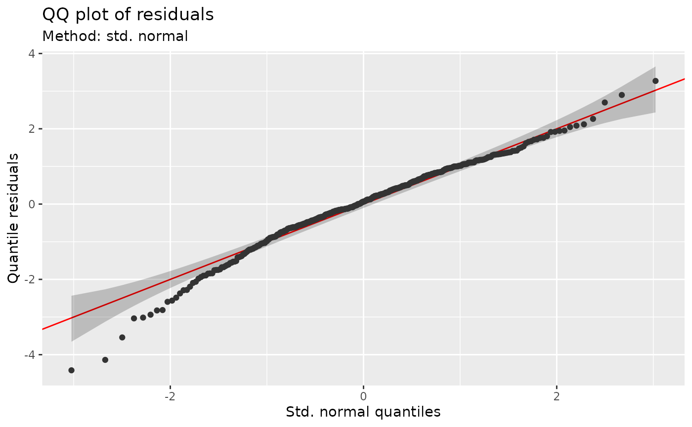
worm_plot(ig_fit, method = "uniform", seed = 407)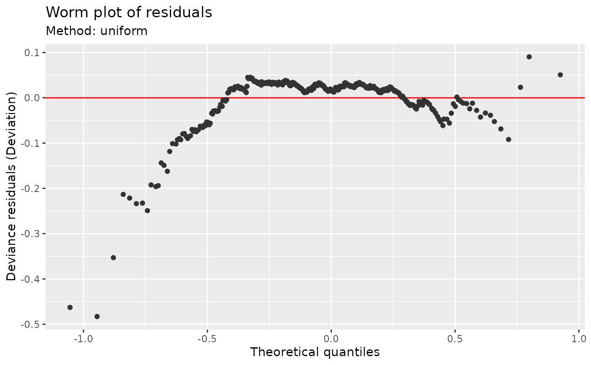
Inverse Gaussian CDF and quantile calculations now work without an additional package, including observation weights. Both models can fit similar means while predicting different tails. The known Gamma generator provides a baseline for comparing those tails with the inverse Gaussian fit, whose variance increases more rapidly with its mean.
Exact zeros and positive amounts
Biomass, rainfall amounts and expenditure can have exact zeros together with positive continuous observations. A Tweedie distribution with power between one and two represents a compound Poisson sum of positive Gamma amounts. It links the zero probability and positive distribution through the mean, dispersion and power. A delta model instead estimates separate occurrence and positive components; see Spatial survey analysis.
set.seed(408)
rain <- data.frame(elevation = runif(400, 0, 1))
rain$amount <- mgcv::rTweedie(exp(-0.6 + 1.5 * rain$elevation), p = 1.5, phi = 1)
rain_fit <- gam(amount ~ s(elevation, k = 10), data = rain,
family = tw(), method = "REML")
qq_plot(rain_fit, seed = 409)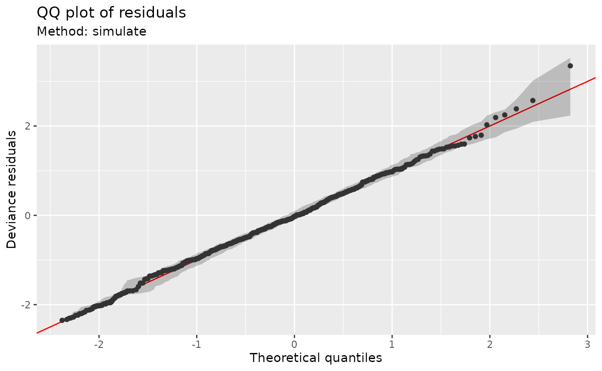
appraise(rain_fit, type = "quantile", seed = 409)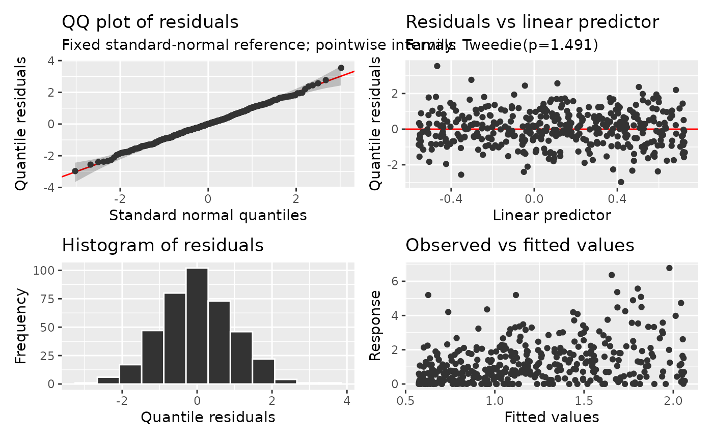
posterior_predictive_plot(rain_fit, n = 50, seed = 410)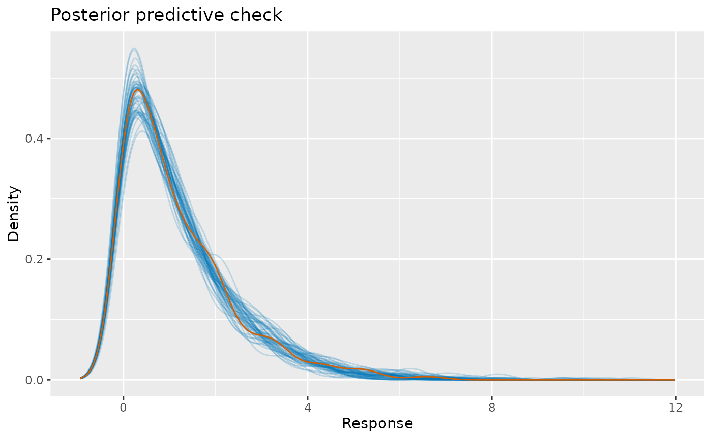
The default QQ reference for traditional Tweedie residuals uses simulation. PIT and quantile residuals use fast Poisson-Gamma mixture CDF calculations. At zero they randomise over the fitted zero mass, which is not a left-tail continuous density. The continuous-response posterior plot uses a kernel density overlay, so it smooths the zeros into a peak; that peak is not the height of an actual continuous density at zero. Its formula gives a useful independent calculation:
p <- rain_fit$family$getTheta(TRUE)
phi <- summary(rain_fit)$scale
zero_probability <- exp(-fitted(rain_fit)^(2 - p) / (phi * (2 - p)))
zero_pit <- quantile_residuals(rain_fit, type = "pit", seed = 409)
data.frame(observed_zero_fraction = mean(rain$amount == 0),
fitted_zero_fraction = mean(zero_probability),
largest_zero_probability_rank = max(zero_pit[rain$amount == 0] /
zero_probability[rain$amount == 0]))
#> observed_zero_fraction fitted_zero_fraction largest_zero_probability_rank
#> 1 0.125 0.1253626 0.9931912The rank ratio stays within the zero mass. Compare observed and expected zero fractions as one check, and inspect the positive tail as another. Native Gamma functions handle power two. Work limits can produce warnings and approximate mixture results; expensive inversion fallback requires the optional tweedie package. Increasing simulation is often preferable to requesting numerical QQ quantiles on a large dataset.
Observations below a detection limit
A nondetect tells us that the latent concentration lies below a
threshold. Replacing it with the threshold creates an artificial point
mass and discards that information. To demonstrate the encoding clearly
we simulate normally distributed log concentrations, with exact
measurements above a fixed limit. The cnorm() response
stores the limit and a censoring bound in two columns.
set.seed(411)
assay <- data.frame(dose = runif(300, 0, 4))
latent <- rnorm(300, mean = 0.3 + 0.5 * assay$dose, sd = 0.7)
limit <- 0.6
assay$reading <- pmax(latent, limit)
assay$bound <- ifelse(latent < limit, -Inf, latent)
censored_fit <- gam(cbind(reading, bound) ~ s(dose, k = 8), data = assay,
family = cnorm(), method = "REML")
u <- quantile_residuals(censored_fit, type = "pit", seed = 412)
qq_plot(censored_fit, type = "quantile", seed = 412)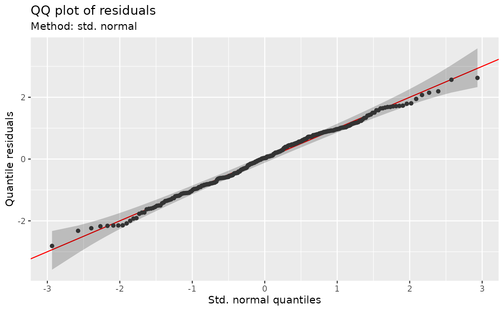
ggplot(data.frame(assay, pit = u), aes(dose, pit)) +
geom_point(aes(colour = bound == -Inf)) +
labs(x = "Dose", y = "PIT residual", colour = "Below limit")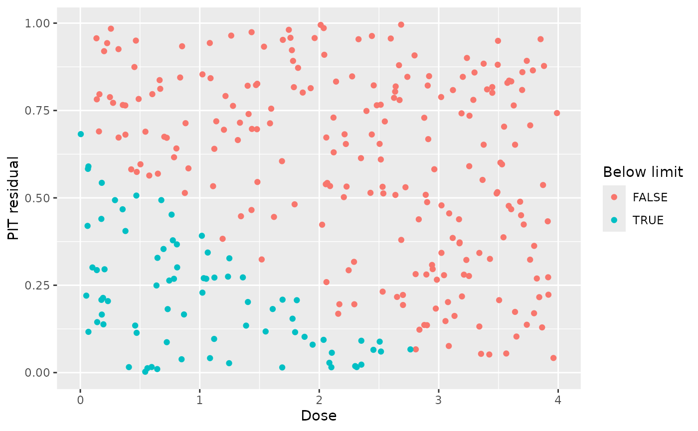
An exact observation uses its fitted CDF. A nondetect is randomised
within the CDF interval below the limit; right and interval censoring
use their relevant bounds. cpois() and clog()
have corresponding count and logistic latent families. Their
distribution helpers and predictions are also supported. Censored
response draws describe the latent response. A posterior predictive plot
of the observed censored values remains unsupported: it needs an
explicit censoring process applied to each draw. For a known fixed
limit, you can draw latent responses and apply that threshold yourself
to reproduce the measurement mechanism.
Binary trials and ordered categories
Binomial sampling weights have a different meaning from precision weights: they count trials. A numeric success proportion with 20 trials can take values in steps of 1/20; a factor-valued Bernoulli response still has one binary trial, even if it carries likelihood weights. Gratia preserves this distinction in residuals and response draws. Here several sites have different visit totals:
set.seed(413)
visits <- data.frame(cover = runif(240), trials = rep(c(5, 10, 20), 80))
visits$success <- rbinom(240, visits$trials, plogis(-1 + 2 * visits$cover))
visits$failure <- visits$trials - visits$success
visit_fit <- gam(cbind(success, failure) ~ s(cover, k = 8), data = visits,
family = binomial(), method = "REML")
appraise(visit_fit, type = "quantile", seed = 414)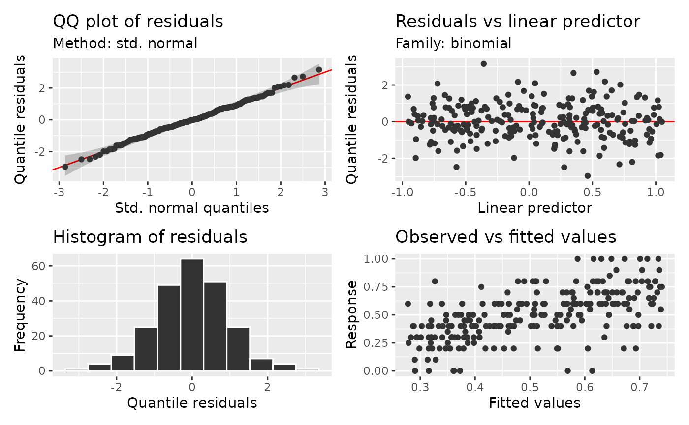
posterior_predictive_plot(visit_fit, n = 50, seed = 414)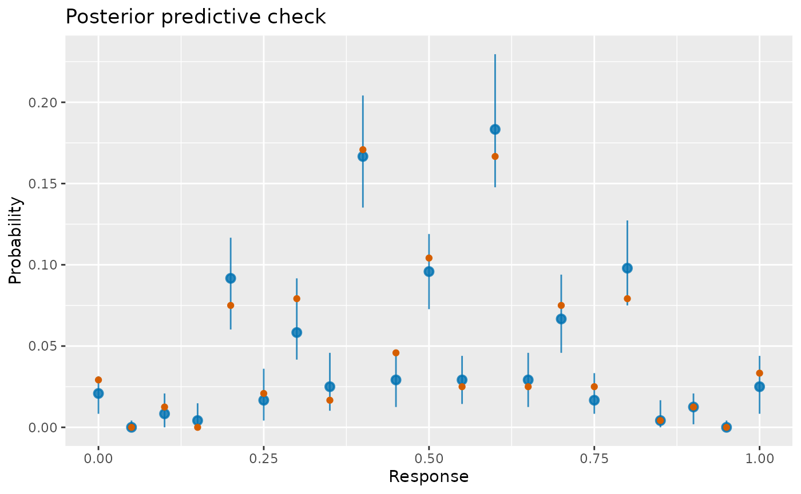
The generating probability has a linear logit, so a familiar ordinary
logistic regression also answers this question. The same public
diagnostics accept its glm object directly:
visit_glm <- glm(cbind(success, failure) ~ cover, data = visits,
family = binomial())
qq_plot(visit_glm, type = "quantile", seed = 414)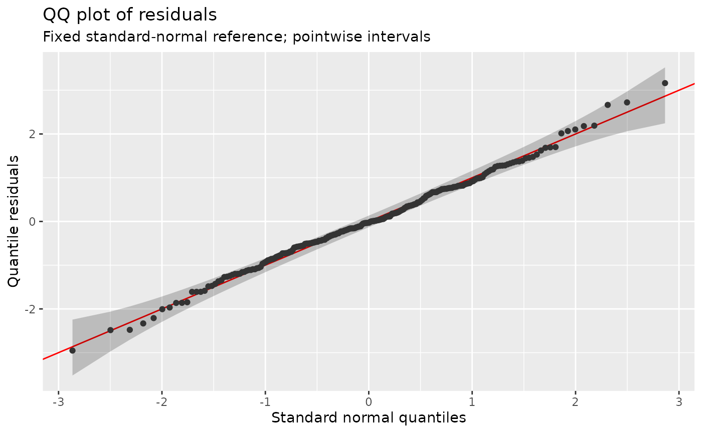
The smooth model allows departure from that linear relationship, at the cost of estimating more flexibility. Similar checks across the fits are consistent with the simple relationship used in this simulation.
Randomisation spans one success, not a full unit of proportion. Posterior predictive plots display proportions at fitting observations and give each row equal weight in the empirical distribution. A site with 20 trials has more precisely distributed proportions, but does not contribute 20 plotted rows. These checks concern the response as encoded in the model.
An ordered response, such as a four-level condition score, instead has category thresholds and an implicit ordering. A demonstration with custom thresholds can use gratia’s data simulator:
ordinal_data <- data_sim("eg1", n = 400, dist = "ocat", n_cat = 4,
cuts = c(-1, 3, 7), seed = 415)
ordinal_fit <- gam(y ~ s(x0) + s(x1) + s(x2) + s(x3), data = ordinal_data,
family = ocat(R = 4), method = "REML")
qq_plot(ordinal_fit, type = "quantile", seed = 416)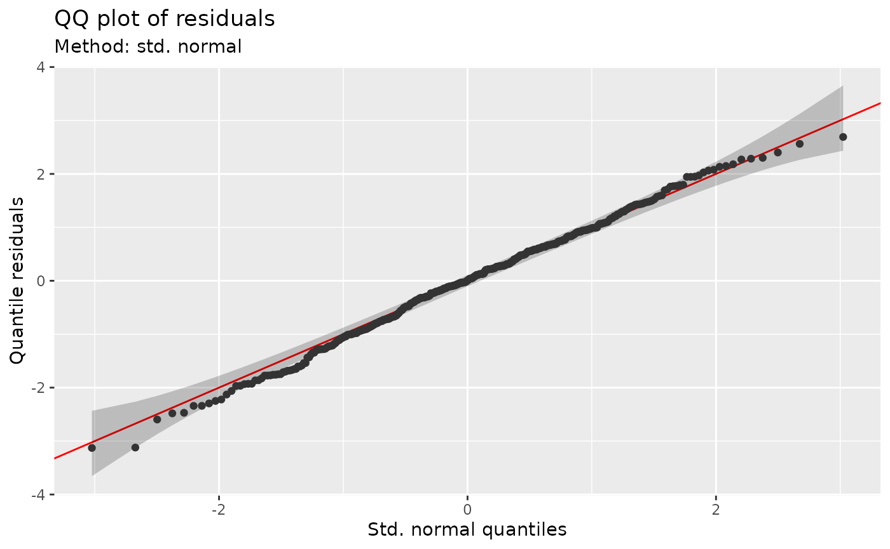
The thresholds define a simulated rating process; they must be finite
and strictly increasing. These checks randomise within ordered category
mass. For nominal categories, mgcv::multinom(K) models one
outcome coded 0, ..., K. gratia accumulates probabilities
in that existing coding order:
F(q) = \sum_{j=0}^{\lfloor q \rfloor} p_j, \qquad Q(u) = \min\{j : F(j) \ge u\}, \quad 0 < u < 1.
The CDF is zero below category 0 and one at or above category K.
Quantiles at lower-tail probabilities zero and one are 0 and K,
respectively; upper-tail probabilities reverse these endpoints. Both
functions accept log probabilities and upper tails. Internally, their
mu argument contains K logits relative to category 0, as in
mgcv’s native random generator, rather than the K+1 probabilities
returned by predict(type = "response").
A PIT for an observed category j is
F(j - 1) + V * p_j, with V uniform on
(0, 1). Thus randomization spans the entire mass of that
category. This is the ordinary randomized probability transform
described by Brockwell
(2007). Each fixed enumeration gives a uniform transform under the
true model. Changing the enumeration can change individual residuals and
diagnostic sensitivity: the probabilities before a given category
change. The coding does not turn the multinomial likelihood into an
ordinal model.
set.seed(417)
category_data <- data.frame(x = runif(300))
category_data$y <- sample(0:2, nrow(category_data), replace = TRUE)
category_fit <- gam(list(y ~ s(x), ~s(x)), data = category_data,
family = multinom(K = 2), method = "REML")
qq_plot(category_fit, type = "quantile", seed = 418)These residuals transform cumulative category probabilities; they are distinct from the latent-utility surrogate residuals for nominal models studied by Cheng, Wang and Zhang (2021).
Use surrogate_residuals() or
appraise(fit, type = "surrogate", seed = 417) for a GAM
fitted with multinom(). These residuals draw continuous
utilities conditional on the observed choice, then subtract each fitted
location and the Gumbel mean. The result is a matrix with columns
labelled 0, …, K, including the reference
category. Every component has a centred Gumbel reference, with mean zero
and variance pi^2 / 6. Even binary
multinom(K = 1) fits retain two utility components; the
difference between them has a logistic reference. This construction uses
the whole utility vector and does not assign an order to the nominal
outcomes.
set.seed(417)
nominal_data <- data.frame(x = runif(400, -2, 2))
locations <- cbind(0, nominal_data$x, -.5 - nominal_data$x)
utilities <- locations - log(-log(matrix(runif(1200), nrow = 400)))
nominal_data$y <- max.col(utilities) - 1L
nominal_fit <- gam(list(y ~ s(x, k = 6), ~ s(x, k = 6)),
data = nominal_data, family = multinom(K = 2), method = "REML")
head(surrogate_residuals(nominal_fit, seed = 418))
#> 0 1 2
#> [1,] 0.2642662 -0.7456620 -0.4193910
#> [2,] -1.2404136 3.2844008 -1.0975267
#> [3,] -2.1688542 -2.1006100 -0.6264208
#> [4,] 2.4842765 -1.5569361 0.5762615
#> [5,] -1.1996106 1.4861575 -0.2546800
#> [6,] -1.3084249 0.1337424 0.4076122
appraise(nominal_fit, type = "surrogate", seed = 418)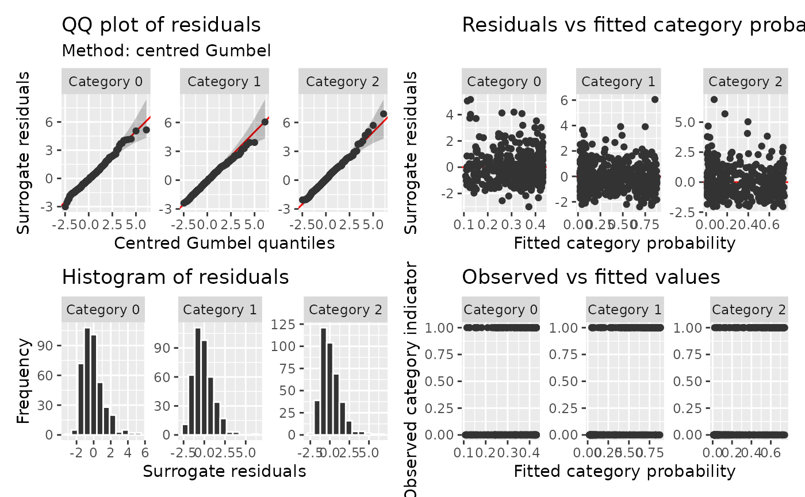
QQ and worm plots show each category separately against centred
Gumbel quantiles. Their pointwise bands treat fitted parameters as fixed
and apply separately to each component. Residual-versus-fitted panels
use each category’s fitted probability, including category 0.
Observed-versus-fitted panels compare category indicators with those
probabilities. All panels share a single draw. For larger data,
scalable = TRUE summarises each category separately while
retaining the same underlying draws for the same seed. Automatic
dispatch counts observations. See surrogate_residuals() for
the sampling identity and reference distributions.
Other distributions and limits to interpretation
The same public diagnostics cover the following additions. Choose a family from its support and scientific sampling mechanism, then inspect the whole fitted distribution, rather than interpreting every first predictor as a mean. These are extensions of the calculations above, not additional worked datasets.
| Family or model | What changes in the checks? |
|---|---|
gaulss(), gammals(),
gumbls(), gevlss(), ziplss()
|
CDF and quantile references use all distributional predictors; zero-inflated models include the point mass |
twlss() |
Mean, power and dispersion vary; select
parameter = "power" for the second link and
"scale", "sigma" or "phi" for the
third |
shash() |
Skewness and tail weight matter; PIT checks remain useful when the package’s deviance contrast is invalid |
ziP() |
Zero-inflated count probabilities include fitted zero mass; it is a
different model from separate ziplss() predictors |
betar() |
Native simulation clips at epsilon endpoints, so diagnostics include their probability mass; this remains an approximation to the fitting likelihood |
scat() |
Scaled-t references retain the fitted heavy-tail parameters |
mvn() |
PIT checks each response separately; joint simulation retains covariance between responses |
bcg() and optional mgcvUtils
clognorm()
|
Link extraction and response predictions are supported; this does not imply every diagnostic or sampler is available |
For models with several parameters use link(),
inv_link() or extract_link() with the
appropriate parameter. For multivariate normal and multinomial families,
explicit which_eta selects and validates the predictor.
Unsupported parameters are errors; a single-link user family can use its
own functions without a family-name whitelist.
inv_link(twlss(), parameter = "power")(0)
#> [1] 0
inv_link(twlss(), parameter = "phi")(0)
#> [1] 0
inv_link(mvn(d = 2), which_eta = 2)(1)
#> [1] 1GEV means exist only when shape is below one, and variances only below one-half. PIT and quantile checks do not require these moments. If an expected response is undefined, gratia explains why an observed-versus-fitted mean panel is unavailable instead of displaying a spurious value. GEV signed deviance checks also require shape at least minus one. For sinh-arcsinh fits, a density above one can give a negative package-defined deviance contrast; use PIT/quantile checks rather than replacing the residual with zero. Deviance magnitudes from these definitions are not comparable standardised scores across families.
Stable tail calculations retain log probabilities where supported,
reducing artificial infinite residuals in extreme count or censored
observations. Unsupported tail conversions still produce explanatory
errors. The diagnostic_support
reference lists supported distributions and restrictions, including
quasi families and working correlations without a response model. Use
fitting-package methods or an explicitly justified observation model
when a requested comparison is unavailable.